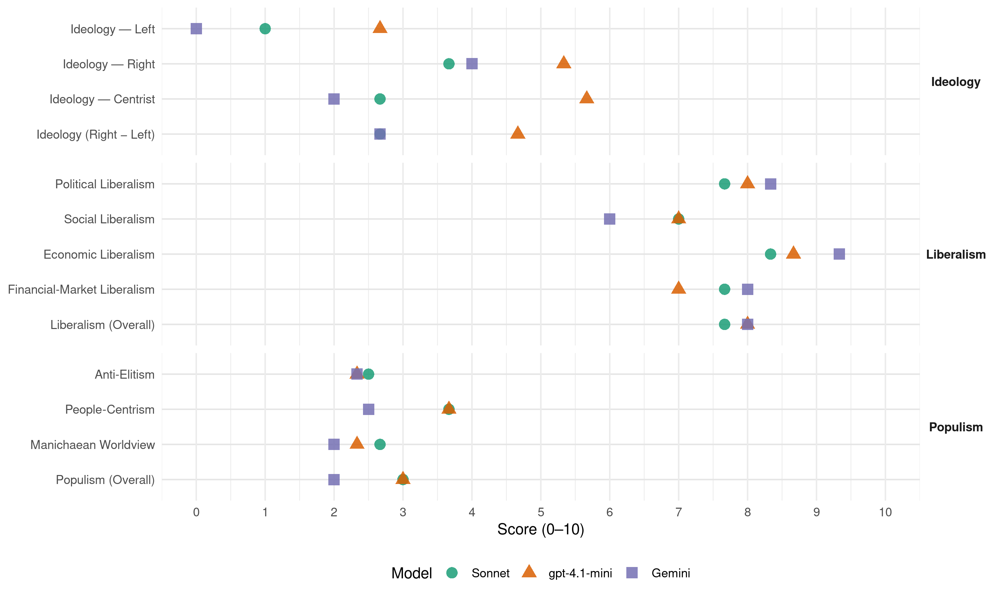

PRL (Belgium, 1987)
manifesto_id 21422_198712
Get full text: This site shows derived annotations and short verbatim quotes only. The full manifesto text is © Manifesto Project / WZB — obtain it via manifesto-project.wzb.eu using the manifesto_id above.
Headline scores
| Dimension | Sonnet | gpt-4.1-mini | Gemini |
|---|---|---|---|
| Populism (Overall) | 3.0 | 3.0 | 2.0 |
| Anti-Elitism | 2.5 | 2.3 | 2.3 |
| People-Centrism | 3.7 | 3.7 | 2.5 |
| Manichaean Worldview | 2.7 | 2.3 | 2.0 |
| Ideology (Right − Left) | 2.7 | 4.7 | 2.7 |
| Liberalism (Overall) | 7.7 | 8.0 | 8.0 |
| Political Liberalism | 7.7 | 8.0 | 8.3 |
| Social Liberalism | 7.0 | 7.0 | 6.0 |
| Economic Liberalism | 8.3 | 8.7 | 9.3 |
| Financial-Market Liberalism | 7.7 | 7.0 | 8.0 |
Evidence per dimension
Economic Liberalism
Gemini · score 9.0 · verified · chunk 1
“augmentant la liberté dans la vie économique”
les formalités débilitantes, en augmentant la liberté dans la vie économique et sociale, en développant le travail
Gemini · score 9.0 · verified · chunk 2
“défendre dans les enceintes internationales et nationales le principe du libre-échange”
Le P.R.L veut: - défendre dans les enceintes internationales et nationales le principe du libre-échange.
Gemini · score 10.0 · verified · chunk 3
“système d’économie plus libre, moins dirigiste”
économique. Il est partisan d’un système d’économie plus libre, moins dirigiste. Il s’oppose à la bureaucratie
gpt-4.1-mini · score 9.0 · verified · chunk 1
“réduction de l’impôt sur les ménages”
Le Gouvernement a décidé une réforme fiscale, une réduction massive des impôts sur le travail: décumul des revenus des époux, taux maximum de 50%, réduction de l’impôt sur les ménages dont un seul époux a des revenus (quotient conjugal), réduction de l’impôt immobilier.
gpt-4.1-mini · score 8.0 · verified · chunk 2
“réduire la pression fiscale sur les revenus du travail”
3. La diminution des impôts et la charte du contribuable. Le gouvernement a pris de nombreuses dispositions de nature à réduire la pression fiscale sur les revenus du travail. La dernière en date est l’organisation du régime d’épargne pension, qui permet à chacun de se constituer un capital exonéré d’impôts pour ses vieux jours.
gpt-4.1-mini · score 9.0 · verified · chunk 3
“Il est partisan d’un système d’économie plus libre, moins dirigiste”
Le P.R.L. est libéral. Il défend la liberté des individus, menacée de toute part: les libertés individuelles et personnelles comme la liberté économique. Il est partisan d’un système d’économie plus libre, moins dirigiste. Il s’oppose à la bureaucratie, à l’étatisme et à la fiscalité abusive.
Sonnet · score 8.0 · verified · chunk 1
“liberté dans la vie économique et sociale”
en augmentant la liberté dans la vie économique et sociale, en développant le travail à temps partiel.
Sonnet · score 8.0 · verified · chunk 2
“défendre le principe du libre-échange”
défendre dans les enceintes internationales et nationales le principe du libre-échange. - adapter l’environnement économique et financier belge
Sonnet · score 9.0 · verified · chunk 3
“liberté d’entreprise, le goût du risque”
les Libéraux se sont identifiés au combat permanent des P.M.E. pour la liberté d’entreprise, le goût du risque
Financial-Market Liberalism
Gemini · score 8.0 · verified · chunk 1
“exigences du marché financier”
une structure et des moyens d’action adaptés aux exigences du marché financier. - assurer la permanence des instruments
Gemini · score 8.0 · verified · chunk 3
“instruments d’accès au capital à risque”
diverses aides à l’investissement et à la création d’emplois. Quant aux instruments d’accès au capital à risque (Fonds de participation)
gpt-4.1-mini · score 7.0 · verified · chunk 1
“développer le capitalisme populaire”
- développer le capitalisme populaire en octroyant un droit de préférence au personnel des institutions publiques de crédit et aux petits épargnants lors des prochaines augmentations de capital de ces institutions.
gpt-4.1-mini · score 7.0 · verified · chunk 2
“le franc belge est désormais dans le peloton de tête des monnaies européennes”
Un franc belge solide. … Le Franc belge est désormais dans le peloton de tête des monnaies européennes, placé après le Mark et le Florin mais bien avant le Franc français, la Livre anglaise et la Lire italienne.
gpt-4.1-mini · score 7.0 · verified · chunk 3
“réduire la réglementation, la bureaucratie, les impôts et les charges”
Il faut laisser les individus et les entreprises produire cette richesse en réduisant la réglementation, la bureaucratie, les impôts et les charges. C’est la seule façon de lutter efficacement et durablement contre te chômage.
Sonnet · score 8.0 · verified · chunk 1
“développer la place financière de Bruxelles”
développer la place financière de Bruxelles, notamment en: introduisant en Bourse, des fonds communs de placements immobiliers et un plus grand nombre de titres étrangers. encourageant l’activité bancaire internationale
Sonnet · score 8.0 · verified · chunk 2
“la décote du franc sur le marché financier”
la décote du franc sur le marché financier est revenue de 12% a la fin de 1981 à 0,6% à la mi-octobre 1987. Le dernier réalignement au sein du Système Monétaire Européen
Sonnet · score 7.0 · verified · chunk 3
“instruments d’accès au capital à risque”
Quant aux instruments d’accès au capital à risque (Fonds de participation), ils ont vu leurs moyens d’action renforcés
Political Liberalism
Gemini · score 8.0 · verified · chunk 1
“protéger les droits individuels”
sur pied une véritable Cour constitutionnelle pour résoudre les conflits et protéger les droits individuels: en précisant les compétences
Gemini · score 8.0 · verified · chunk 2
“garantir, dans la loi, les droits”
visant à garantir, dans la loi, les droits de chacun à l’égard du fisc
Gemini · score 9.0 · verified · chunk 3
“accroître la démocratie politique par le référendum”
système politique et social: accroître la démocratie politique par le référendum; la démocratie économique par la participation
gpt-4.1-mini · score 8.0 · verified · chunk 1
“garantir la liberté du choix pour le patient”
Le P.R.L. veut: - défendre la liberté du choix pour le patient et la liberté thérapeutique pour le médecin. - casser les mécanismes générateurs de dépenses insupportables. - revoir en profondeur le mode de financement des organismes assureurs et lutter contre la croissance inconsidérée des frais administratifs de l’INAMI.
gpt-4.1-mini · score 8.0 · verified · chunk 2
“le respect de la vie privée figure parmi les libertés fondamentales”
31. Protéger la vie privée. Le droit au respect de la vie privée figure parmi les libertés fondamentales. Le principe en est consacré dans la Convention européenne des Droits de l’Homme. Sa protection est encore insuffisante en Belgique.
gpt-4.1-mini · score 8.0 · verified · chunk 3
“accroître la démocratie politique par le référendum”
Le P.R.L préconise de diminuer les contraintes, de libérer les initiatives et les capacités des individus. Il prône aussi un changement du système politique et social: accroître la démocratie politique par le référendum; la démocratie économique par la participation dans l’entreprise; la justice sociale en faveur des plus démunis.
Sonnet · score 7.0 · verified · chunk 1
“véritable Cour constitutionnelle pour résoudre les conflits”
en créant un Sénat paritaire, en mettant sur pied une véritable Cour constitutionnelle pour résoudre les conflits et protéger les droits individuels
Sonnet · score 8.0 · verified · chunk 2
“instaurer le référendum de décision pour permettre aux citoyens”
Le P.R.L. veut: - instaurer le référendum de décision pour permettre aux citoyens d’opérer les choix fondamentaux.
Sonnet · score 8.0 · verified · chunk 3
“accroître la démocratie politique par le référendum”
Il prône aussi un changement du système politique et social: accroître la démocratie politique par le référendum
Liberalism (Overall)
Gemini · score 8.0 · verified · chunk 1
“augmentant la liberté dans la vie économique”
les formalités débilitantes, en augmentant la liberté dans la vie économique et sociale, en développant le travail
Gemini · score 7.0 · verified · chunk 2
“défendre dans les enceintes internationales et nationales le principe du libre-échange”
Le P.R.L veut: - défendre dans les enceintes internationales et nationales le principe du libre-échange.
Gemini · score 9.0 · verified · chunk 3
“défend la liberté des individus”
Le P.R.L. est libéral. Il défend la liberté des individus, menacée de toute part: les libertés
gpt-4.1-mini · score 8.0 · verified · chunk 1
“réduction massive des impôts sur le travail”
Le Gouvernement a décidé une réforme fiscale, une réduction massive des impôts sur le travail: décumul des revenus des époux, taux maximum de 50%, réduction de l’impôt sur les ménages dont un seul époux a des revenus (quotient conjugal), réduction de l’impôt immobilier.
gpt-4.1-mini · score 8.0 · verified · chunk 2
“réduire la pression fiscale sur les revenus du travail”
3. La diminution des impôts et la charte du contribuable. Le gouvernement a pris de nombreuses dispositions de nature à réduire la pression fiscale sur les revenus du travail. La dernière en date est l’organisation du régime d’épargne pension, qui permet à chacun de se constituer un capital exonéré d’impôts pour ses vieux jours.
gpt-4.1-mini · score 8.0 · verified · chunk 3
“Il est partisan d’un système d’économie plus libre, moins dirigiste”
Le P.R.L. est libéral. Il défend la liberté des individus, menacée de toute part: les libertés individuelles et personnelles comme la liberté économique. Il est partisan d’un système d’économie plus libre, moins dirigiste. Il s’oppose à la bureaucratie, à l’étatisme et à la fiscalité abusive.
Sonnet · score 7.0 · verified · chunk 1
“Les valeurs fondamentales du libéralisme”
Les valeurs fondamentales du libéralisme, liberté, esprit d’entreprise, goût du risque, sens des responsabilités, confiance en l’homme, sont celles des petites et moyennes entreprises
Sonnet · score 8.0 · verified · chunk 2
“liberté d’expression, pluralisme, concurrence, innovation technologique”
Les mots clés de l’action sont: liberté d’expression, pluralisme, concurrence, innovation technologique.
Sonnet · score 8.0 · verified · chunk 3
“Il défend la liberté des individus”
Le P.R.L. est libéral. Il défend la liberté des individus, menacée de toute part: les libertés individuelles et personnelles comme la liberté économique
Anti-Elitism
Gemini · score 3.0 · verified · chunk 1
“la toute puissance des syndicats”
déclin économique, les dépenses à tort et à travers, la toute puissance des syndicats. Le pays courra de grands risques.
Gemini · score 2.0 · verified · chunk 2
“développé un véritable clientélisme politique”
les gouvernements successifs avaient développé un véritable clientélisme politique en utilisant les services publics
Gemini · score 2.0 · verified · chunk 3
“placer leur clientèle”
pouvoir avec n’importe qui, pour faire n’importe quoi et d’abord placer leur clientèle. Mais lorsqu’ils sont au pouvoir
gpt-4.1-mini · score 2.0 · verified · chunk 1
“la toute puissance des syndicats”
la fin de la confiance, l’arrêt du redressement économique et de l’assainissement des finances publiques, l’abandon de la diminution des impôts. La Belgique connaîtra à nouveau le déclin économique, les dépenses à tort et à travers, la toute puissance des syndicats. Le pays courra de grands risques.
gpt-4.1-mini · score 3.0 · verified · chunk 2
“faire prévaloir par son action au sein du Gouvernement l’intérêt sur les revendications contradictoires des groupes de pression”
- assurer la stabilité du Gouvernement tout au long de la prochaine législature. - faire prévaloir par son action au sein du Gouvernement l’intérêt sur les revendications contradictoires des groupes de pression. - donner au Gouvernement les moyens de gouverner efficacement en fixant dans la Constitution la liste limitative des matières réservées au législateur.
gpt-4.1-mini · score 2.0 · verified · chunk 3
“Il s’oppose à la bureaucratie, à l’étatisme et à la fiscalité abusive”
Le P.R.L. est libéral. Il défend la liberté des individus, menacée de toute part: les libertés individuelles et personnelles comme la liberté économique. Il est partisan d’un système d’économie plus libre, moins dirigiste. Il s’oppose à la bureaucratie, à l’étatisme et à la fiscalité abusive. Le P.R.L. associe étroitement liberté et responsabilité car seuls les hommes responsables sont vraiment libres.
Sonnet · score 3.0 · verified · chunk 1
“la toute puissance des syndicats”
l’arrêt du redressement économique et de l’assainissement des finances publiques, l’abandon de la diminution des impôts. La Belgique connaîtra à nouveau le déclin économique, les dépenses à tort et à travers, la toute puissance des syndicats.
Sonnet · score 2.0 · verified · chunk 2
“clientélisme politique en utilisant les services publics”
les gouvernements successifs avalent développé un véritable clientélisme politique en utilisant les services publics comme convoyeurs de main-d’œuvre
Sonnet · score 4.0 · mixed · chunk 3
“la toute puissance des syndicats”
Va-t-on revenir à l’instabilité politique, à la toute puissance des syndicats, aux querelles communautaires
Ideology — Centrist
Gemini · score 2.0 · verified · chunk 3
“recherche de l’intérêt général”
pas à la lutte des classes mais à une recherche de l’intérêt général dans la liberté et la justice.
gpt-4.1-mini · score 6.0 · verified · chunk 1
“le prochain Gouvernement se consacre à l’essentiel”
Etes-vous d’accord pour que le prochain Gouvernement se consacre à l’essentiel? Si oui, sachez que tout dépend de votre vote. Si les Libéraux ne gagnent pas les élections, les Sociaux-Chrétiens n’hésiteront pas à s’allier aux Socialistes pour gouverner selon les thèses du Mouvement Ouvrier Chrétien (M.O.C.)
gpt-4.1-mini · score 4.0 · verified · chunk 2
“Le citoyen doit avoir le moyen de trancher sur l’essentiel, de faire entendre sa voix”
42. Donner la parole aux citoyens rendre la vie politique plus transparente. Le citoyen doit avoir le moyen de trancher sur l’essentiel, de faire entendre sa voix en dehors des élections. Le référendum est un moyen de rendre l’usage de la démocratie aux citoyens, de débloquer des problèmes actuellement gelés par les partis.
gpt-4.1-mini · score 7.0 · verified · chunk 3
“Le P.R.L. est un grand parti qui accueille chacun, sur un pied d’égalité, en un coude à coude fraternel”
Le P.R.L. est pluraliste. Le pluralisme philosophique est la condition de base d’une vie politique moderne. Le P.R.L est un grand parti qui accueille chacun, sur un pied d’égalité, en un coude à coude fraternel. Il compte en ses rangs des croyants, catholiques convaincus, des fidèles d’autres religions, des non-croyants et des agnostiques.
Sonnet · score 2.0 · verified · chunk 1
“aller à l’essentiel, de gagner ensemble”
Nous vous proposons d’aller à l’essentiel, de gagner ensemble. Pendant six ans le Gouvernement MARTENS-GOL a prouvé qu’il savait gouverner.
Sonnet · score 1.0 · verified · chunk 2
“Le citoyen doit avoir le moyen de trancher”
Le citoyen doit avoir le moyen de trancher sur l’essentiel, de faire entendre sa voix en dehors des élections.
Sonnet · score 5.0 · verified · chunk 3
“Il ne croit pas à la lutte des classes”
Il ne croit pas à la lutte des classes mais à une recherche de l’intérêt général dans la liberté et la justice
Ideology — Left
Gemini · score 0.0 · verified · chunk 3
“rejette l’égalitarisme qui nivelle”
égalité des chances pour chacun est assurée. Mais je rejette l’égalitarisme qui nivelle les conditions et les différences.
gpt-4.1-mini · score 3.0 · verified · chunk 1
“la fin de la confiance, l’arrêt du redressement économique”
la fin de la confiance, l’arrêt du redressement économique et de l’assainissement des finances publiques, l’abandon de la diminution des impôts. La Belgique connaîtra à nouveau le déclin économique, les dépenses à tort et à travers, la toute puissance des syndicats.
gpt-4.1-mini · score 2.0 · verified · chunk 2
“lutter contre certaines situations abusives”
7. L’immigration mieux contrôlée. … Il a eu le courage de prendre une série de mesures efficaces et réalistes telles que: - un contrôle plus strict de l’immigration. - l’encouragement au départ des chômeurs de longue durée. - l’expulsion des étrangers délinquants. - la lutte contre l’immigration clandestine et les demandes abusives du statut de réfugié politique. - l’assouplissement des conditions d’obtention de notre nationalité. Cette politique doit être poursuivie avec fermeté, par l’application stricte des lois qui viennent d’être adoptées.
gpt-4.1-mini · score 3.0 · verified · chunk 3
“la justice sociale en faveur des plus démunis”
Le P.R.L préconise de diminuer les contraintes, de libérer les initiatives et les capacités des individus. Il prône aussi un changement du système politique et social: accroître la démocratie politique par le référendum; la démocratie économique par la participation dans l’entreprise; la justice sociale en faveur des plus démunis.
Sonnet · score 1.0 · verified · chunk 1
“lutter contre la pauvreté”
Pour réduire les impôts sur le travail, créer des emplois nouveaux et lutter contre la pauvreté. Pour réformer l’Etat avec bon sens
Sonnet · score 1.0 · verified · chunk 2
“liberté d’entreprise, le goût du risque”
les Libéraux se sont identifiés au combat permanent des P.M.E. pour la liberté d’entreprise, le goût du risque et le souci du travail bien fait
Sonnet · score 1.0 · verified · chunk 3
“justice sociale en faveur des plus démunis”
la démocratie économique par la participation dans l’entreprise; la justice sociale en faveur des plus démunis
Ideology (Right − Left)
Gemini · score 3.0 · verified · chunk 1
“arrêter toute nouvelle immigration”
s’engage, en cas de participation au prochain gouvernement, à: 1. … 7. arrêter toute nouvelle immigration, favoriser l’intégration des immigrés
Gemini · score 2.0 · verified · chunk 2
“arrêter toute immigration nouvelle”
Le P.R.L. veut: - arrêter toute immigration nouvelle. - poursuivre la lutte
Gemini · score 3.0 · verified · chunk 3
“un contrôle plus strict de l’immigration”
mesures efficaces et réalistes telles que: - un contrôle plus strict de l’immigration. - l’encouragement au départ des chômeurs
gpt-4.1-mini · score 5.0 · verified · chunk 1
“arrêter l’immigration”
Pour arrêter l’immigration. Pour garantir la sécurité de chacun. Pour défendre les intérêts de la Wallonie, de Bruxelles et de la Belgique. Pour sauvegarder nos libertés.
gpt-4.1-mini · score 4.0 · verified · chunk 2
“faire prévaloir par son action au sein du Gouvernement l’intérêt sur les revendications contradictoires des groupes de pression”
- assurer la stabilité du Gouvernement tout au long de la prochaine législature. - faire prévaloir par son action au sein du Gouvernement l’intérêt sur les revendications contradictoires des groupes de pression. - donner au Gouvernement les moyens de gouverner efficacement en fixant dans la Constitution la liste limitative des matières réservées au législateur.
gpt-4.1-mini · score 5.0 · verified · chunk 3
“Il s’oppose à la bureaucratie, à l’étatisme et à la fiscalité abusive”
Le P.R.L. est libéral. Il défend la liberté des individus, menacée de toute part: les libertés individuelles et personnelles comme la liberté économique. Il est partisan d’un système d’économie plus libre, moins dirigiste. Il s’oppose à la bureaucratie, à l’étatisme et à la fiscalité abusive. Le P.R.L. associe étroitement liberté et responsabilité car seuls les hommes responsables sont vraiment libres.
Sonnet · score 3.0 · verified · chunk 1
“arrêter toute nouvelle immigration”
Pour limiter l’action des groupes de pression et les abus des syndicats. Pour arrêter l’immigration. Pour garantir la sécurité de chacun.
Sonnet · score 2.0 · verified · chunk 2
“arrêter toute immigration nouvelle”
Le P.R.L. veut: - arrêter toute immigration nouvelle. - poursuivre la lutte contre l’immigration clandestine
Sonnet · score 3.0 · verified · chunk 3
“au centre des grandes forces politiques”
Le P.R.L. est au centre des grandes forces politiques, également éloigné du conservatisme réactionnaire et du marxisme intolérant
Ideology — Right
Gemini · score 4.0 · verified · chunk 1
“arrêter toute nouvelle immigration”
s’engage, en cas de participation au prochain gouvernement, à: 1. … 7. arrêter toute nouvelle immigration, favoriser l’intégration des immigrés
Gemini · score 4.0 · verified · chunk 2
“arrêter toute immigration nouvelle”
Le P.R.L. veut: - arrêter toute immigration nouvelle. - poursuivre la lutte
Gemini · score 4.0 · verified · chunk 3
“un contrôle plus strict de l’immigration”
mesures efficaces et réalistes telles que: - un contrôle plus strict de l’immigration. - l’encouragement au départ des chômeurs
gpt-4.1-mini · score 5.0 · verified · chunk 1
“arrêter l’immigration”
Pour arrêter l’immigration. Pour garantir la sécurité de chacun. Pour défendre les intérêts de la Wallonie, de Bruxelles et de la Belgique. Pour sauvegarder nos libertés.
gpt-4.1-mini · score 6.0 · verified · chunk 2
“arrêter toute immigration nouvelle”
Le P.R.L. veut: - arrêter toute immigration nouvelle. - poursuivre la lutte contre l’immigration clandestine et éloigner les étrangers qui ont été condamnés pour des faits graves et en tout cas pour des faits de violence ou trafic de stupéfiants.
gpt-4.1-mini · score 5.0 · verified · chunk 3
“Il s’oppose au flamingantisme”
Le P.R.L défend les intérêts des Wallons et des Bruxellois. Il s’oppose au flamingantisme. Il refuse le partage inéquitable des ressources communes et le blocage des dossiers essentiels pour la Wallonie et Bruxelles.
Sonnet · score 5.0 · verified · chunk 1
“arrêter toute nouvelle immigration”
Pour limiter l’action des groupes de pression et les abus des syndicats. Pour arrêter l’immigration. Pour garantir la sécurité de chacun.
Sonnet · score 3.0 · verified · chunk 2
“arrêter toute immigration nouvelle”
Le P.R.L. veut: - arrêter toute immigration nouvelle. - poursuivre la lutte contre l’immigration clandestine
Sonnet · score 3.0 · verified · chunk 3
“contrôle plus strict de l’immigration”
Il a eu le courage de prendre une série de mesures efficaces et réalistes telles que: - un contrôle plus strict de l’immigration
Manichaean Worldview
Gemini · score 3.0 · verified · chunk 1
“Une crise inutile est venue stupidement”
poursuivre leur tâche de redressement jusqu’en 1989. Une crise inutile est venue stupidement tout interrompre. A un moment de grande
Gemini · score 1.0 · verified · chunk 3
“conservatisme réactionnaire et du marxisme intolérant”
grandes forces politiques, également éloigné du conservatisme réactionnaire et du marxisme intolérant. Les Libéraux belges font partie
gpt-4.1-mini · score 3.0 · verified · chunk 1
“Une crise inutile est venue stupidement tout interrompre”
Une crise inutile est venue stupidement tout interrompre. A un moment de grande inquiétude. Dans le monde, la bourse chute, l’économie internationale vacille. Et en Belgique on se dispute à nouveau sur les Fourons.
gpt-4.1-mini · score 1.0 · verified · chunk 2
“un flamingantisme qui tente de dominer la Belgique”
43. Garantir les droits et les intérêts francophones. … Wallons et Bruxellois francophones de toutes tendances politiques et philosophiques doivent se concerter et agir unis face à un flamingantisme qui tente de dominer la Belgique. Cette action porte aussi sur les droits individuels des francophones.
gpt-4.1-mini · score 3.0 · verified · chunk 3
“Il refuse que le symbole de la Wallonie devienne les bras croisés de la grève et le poing serré de la lutte des classes”
Il refuse le partage inéquitable des ressources communes et le blocage des dossiers essentiels pour la Wallonie et Bruxelles. Il réclame pour la région de Bruxelles les mêmes droits que pour les deux autres régions du pays. Il refuse que le symbole de la Wallonie devienne les bras croisés de la grève et le poing serré de la lutte des classes.
Sonnet · score 3.0 · verified · chunk 1
“la crise était décidée d’avance”
Leurs efforts ont été vains car la crise était décidée d’avance par le C.V.P. et le P.S.C. L’affaire des Fourons qui dure depuis 25 ans
Sonnet · score 1.0 · verified · chunk 2
“Les sociaux-chrétiens se sont livrés à une surenchère”
Les sociaux-chrétiens se sont livrés à une surenchère qui a compromis l’essentiel. La stabilité doit être rétablie.
Sonnet · score 4.0 · verified · chunk 3
“Son but est atteint: il a fait tomber le gouvernement”
Il se soumet donc au souhait des Flamands. Son but est atteint: il a fait tomber le gouvernement. Quelle aubaine pour le P.S.
People-Centrism
Gemini · score 2.0 · verified · chunk 1
“Ces idées libérales sont les vôtres”
ils parlent le langage du libéralisme. Ces idées libérales sont les vôtres. Le P.R.L les développe avec constance
Gemini · score 3.0 · verified · chunk 3
“Il s’adresse à tous les citoyens”
Le P.R.L. est populaire. Il s’adresse à tous les citoyens, quelles que soient leur profession, leur situation sociale
gpt-4.1-mini · score 3.0 · verified · chunk 1
“Chacune et chacun d’entre nous en veut encore, est prêt à s’engager”
Vous n’êtes pas résignés. Vous attendez ce message. Notre pays, nos régions ont encore en eux-mêmes des ressources de volonté et d’action considérables. Chacune et chacun d’entre nous en veut encore, est prêt à s’engager et à s’enthousiasmer pour un projet porteur d’avenir.
gpt-4.1-mini · score 2.0 · verified · chunk 2
“Le citoyen doit avoir le moyen de trancher sur l’essentiel, de faire entendre sa voix”
42. Donner la parole aux citoyens rendre la vie politique plus transparente. Le citoyen doit avoir le moyen de trancher sur l’essentiel, de faire entendre sa voix en dehors des élections. Le référendum est un moyen de rendre l’usage de la démocratie aux citoyens, de débloquer des problèmes actuellement gelés par les partis.
gpt-4.1-mini · score 6.0 · verified · chunk 3
“Il s’adresse à tous les citoyens, quelles que soient leur profession, leur situation sociale ou de famille”
Le P.R.L. est populaire. Il s’adresse à tous les citoyens, quelles que soient leur profession, leur situation sociale ou de famille. Il ne croit pas à la lutte des classes mais à une recherche de l’intérêt général dans la liberté et la justice.
Sonnet · score 4.0 · verified · chunk 1
“Vous n’êtes pas résignés”
C’est un message de foi et d’espérance que nous vous adressons. Vous n’êtes pas résignés. Vous attendez ce message. Notre pays, nos régions ont encore en eux-mêmes des ressources
Sonnet · score 2.0 · verified · chunk 2
“Le citoyen doit avoir le moyen de trancher”
Le citoyen doit avoir le moyen de trancher sur l’essentiel, de faire entendre sa voix en dehors des élections.
Sonnet · score 5.0 · verified · chunk 3
“Il s’adresse à tous les citoyens”
Le P.R.L. est populaire. Il s’adresse à tous les citoyens, quelles que soient leur profession, leur situation sociale
Populism (Overall)
Gemini · score 3.0 · verified · chunk 1
“la toute puissance des syndicats”
déclin économique, les dépenses à tort et à travers, la toute puissance des syndicats. Le pays courra de grands risques.
Gemini · score 1.0 · verified · chunk 2
“développé un véritable clientélisme politique”
les gouvernements successifs avaient développé un véritable clientélisme politique en utilisant les services publics
Gemini · score 2.0 · verified · chunk 3
“placer leur clientèle”
pouvoir avec n’importe qui, pour faire n’importe quoi et d’abord placer leur clientèle. Mais lorsqu’ils sont au pouvoir
gpt-4.1-mini · score 3.0 · verified · chunk 1
“la toute puissance des syndicats”
la fin de la confiance, l’arrêt du redressement économique et de l’assainissement des finances publiques, l’abandon de la diminution des impôts. La Belgique connaîtra à nouveau le déclin économique, les dépenses à tort et à travers, la toute puissance des syndicats. Le pays courra de grands risques.
gpt-4.1-mini · score 2.0 · verified · chunk 2
“faire prévaloir par son action au sein du Gouvernement l’intérêt sur les revendications contradictoires des groupes de pression”
- assurer la stabilité du Gouvernement tout au long de la prochaine législature. - faire prévaloir par son action au sein du Gouvernement l’intérêt sur les revendications contradictoires des groupes de pression. - donner au Gouvernement les moyens de gouverner efficacement en fixant dans la Constitution la liste limitative des matières réservées au législateur.
gpt-4.1-mini · score 4.0 · verified · chunk 3
“Il s’oppose à la bureaucratie, à l’étatisme et à la fiscalité abusive”
Le P.R.L. est libéral. Il défend la liberté des individus, menacée de toute part: les libertés individuelles et personnelles comme la liberté économique. Il est partisan d’un système d’économie plus libre, moins dirigiste. Il s’oppose à la bureaucratie, à l’étatisme et à la fiscalité abusive. Le P.R.L. associe étroitement liberté et responsabilité car seuls les hommes responsables sont vraiment libres.
Sonnet · score 3.0 · verified · chunk 1
“Seule la force libérale peut faire”
Seule la force libérale peut faire que le prochain gouvernement retrouve le sens des vraies priorités et se consacre à l’essentiel.
Sonnet · score 2.0 · verified · chunk 2
“clientélisme politique en utilisant les services publics”
les gouvernements successifs avalent développé un véritable clientélisme politique en utilisant les services publics comme convoyeurs de main-d’œuvre
Sonnet · score 4.0 · verified · chunk 3
“la toute puissance des syndicats”
Va-t-on revenir à l’instabilité politique, à la toute puissance des syndicats, aux querelles communautaires
Social Liberalism